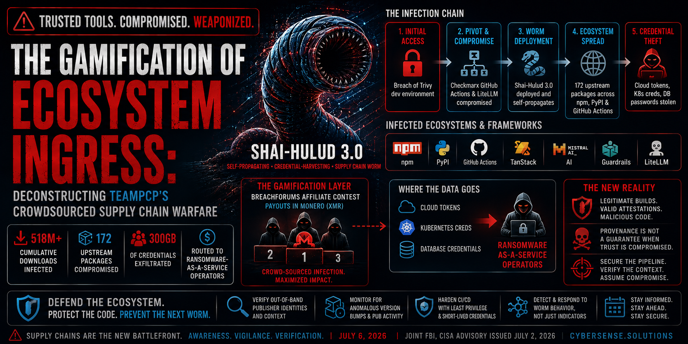

The Gamification of Ecosystem Ingress: Deconstructing TeamPCP's Crowdsourced Supply Chain Warfare

Executive Summary
Between March and June 2026, a threat actor group designated TeamPCP executed a cascading software supply chain campaign that compromised foundational developer tools, infected an estimated 518 million cumulative package downloads across 172 upstream packages, and deployed a self-propagating credential-harvesting worm designated Shai-Hulud 3.0 across npm, PyPI, and GitHub Actions ecosystems. The campaign's initial access originated through a breach of the open-source security scanning tool Trivy and propagated through dependent tools including Checkmarx GitHub Actions workflows and the LiteLLM Python package—ultimately reaching AI development frameworks including TanStack, Mistral AI, and Guardrails AI. What distinguishes this campaign architecturally is the combination of automated worm propagation with a public affiliate bounty contest that crowdsourced downstream infection volume to independent actors via BreachForums. Harvested credentials were routed to ransomware-as-a-service operators. For engineering teams and security leaders, the campaign demonstrates that provenance-based trust in development tooling is insufficient when the compromise originates inside legitimate build environments.
Key Finding: Shai-Hulud 3.0 propagated through legitimate, authenticated build environments — carrying valid SLSA Build Level 3 attestations throughout — making standard pipeline integrity verification and software composition analysis controls blind to the compromise across 518 million cumulative package downloads. TeamPCP's crowdsourced affiliate bounty model on BreachForums transformed a coordinated supply chain operation into a distributed, financially incentivized infection campaign feeding directly into ransomware-as-a-service pipelines.
What Happened
The TeamPCP supply chain campaign unfolded in documented waves between March and June 2026, with escalating scope at each propagation stage. The initial access vector was a targeted breach of the development environment of Trivy, a widely deployed open-source container and filesystem security scanning tool. By gaining access to credentials and tokens associated with Trivy's development infrastructure, TeamPCP obtained authenticated publishing rights that could be leveraged across interconnected developer tool ecosystems—establishing the first link in what became a cascading compromise chain.
Using credentials exfiltrated from the Trivy environment, the group systematically compromised the GitHub Actions workflows of Checkmarx—specifically the ast-github-action and kics-github-action components used by development teams to integrate application security testing into CI/CD pipelines—and the LiteLLM Python package, a widely used library for interfacing with large language model APIs. These were not incidental targets; they were chosen for their downstream reach within development environments.
Once embedded inside these foundational systems, TeamPCP deployed Shai-Hulud 3.0, an automated credential-harvesting worm designed for self-directed propagation. The worm autonomously enumerated every code namespace accessible to the compromised credentials, incremented package version numbers to trigger automatic dependency updates in consuming environments, and uploaded backdoored releases to public repositories. Because publishing operations occurred within legitimate build environments using authenticated credentials, the resulting packages carried valid SLSA Build Level 3 attestations—the supply chain provenance standard used to verify that software artifacts were produced through authorized processes. Standard pipeline integrity checks reported clean results throughout.
In May and June 2026, the campaign shifted focus toward the AI development ecosystem specifically. Malicious dependencies were introduced into frameworks including TanStack, Mistral AI, Guardrails AI, and LiteLLM, and fabricated model files were distributed through repositories including Hugging Face. By the time the campaign was documented in FBI and CISA joint advisories issued July 2, 2026, cumulative exposure had reached an estimated 518 million downloads across 172 upstream packages.
To scale the operation beyond what a single threat actor organization could sustain, TeamPCP publicly released the Shai-Hulud worm core on BreachForums and launched an affiliate contest offering Monero-denominated payouts to independent participants who achieved the highest volume of downstream enterprise infections. This gamification mechanism transformed a coordinated threat actor operation into a distributed, crowdsourced access-mining campaign. Harvested cloud tokens, Kubernetes service account credentials, and an estimated 300 gigabytes of compressed corporate database credentials were routed to downstream ransomware-as-a-service operators.
Why It Matters
For Technical Practitioners & Threat Hunters
The Shai-Hulud 3.0 campaign fundamentally undermines the analytical baseline on which software composition analysis and pipeline integrity verification currently operate. The defining characteristic of the campaign is not the sophistication of its individual exploits—it is the fact that malicious package insertions occurred inside legitimate, authenticated build environments rather than through forged keys or external injection. The infected packages therefore carried valid SLSA Build Level 3 attestations: the integrity signals that security teams use to distinguish trusted artifacts from tampered ones indicated clean provenance throughout the campaign's operational period. Organizations that rely on attestation verification as a primary supply chain control have an evidence-based case study demonstrating where that control fails.
For DevSecOps Engineers & AI Development Teams
The campaign introduces a specific tradecraft dimension warranting direct attention. Shai-Hulud 3.0 was documented scanning target environments for local .claude/ and .vscode/ directory structures—the configuration directories associated with AI-assisted development environments—and placing persistence hooks designed to inject prompt-manipulation payloads and maintain shell access through developer assistant interfaces. This represents an adversarial technique specifically calibrated to the AI-augmented development workflows that have become standard across software engineering teams, demonstrating that AI tooling integration introduces persistence surface area that conventional endpoint monitoring was not designed to observe.
For Chief Information Security Officers & Executive Risk Officers
The crowdsourced affiliate model is the strategic development demanding board-level attention. By open-sourcing the worm core and establishing a financial incentive structure for independent participants, TeamPCP converted a single threat actor operation into a distributed, financially motivated ecosystem. The operational implication is that the campaign's reach, longevity, and geographic distribution cannot be attributed to a bounded actor group—each affiliate participant extends the campaign's scope independently. The connection to ransomware-as-a-service pipelines means that initial-access harvesting from the supply chain flows directly into downstream extortion operations.
Operational Implications
The most immediate operational implication for organizations that downloaded or evaluated affected packages during the March through June 2026 exposure window is that standard user-level credential rotation is insufficient as a remediation response. Shai-Hulud 3.0 was specifically documented targeting AWS Instance Metadata Service and IRSA identity contexts, Kubernetes service account credentials, and local password manager vault files. These are infrastructure-layer and secrets management credentials that operate outside the scope of standard password reset procedures. Full programmatic rotation of cloud infrastructure secrets, pipeline service credentials, and secrets management master keys is required—not as a precautionary measure but as a documented response necessity.
The second immediate operational implication involves the security scanner blind spot the campaign exposed. Because Shai-Hulud's malicious scripts executed natively within authorized CI/CD testing phases using authenticated credentials, infrastructure-as-code scanning tools and software composition analysis platforms reported clean results during active exfiltration operations. Organizations whose security posture relies on periodic SCA scans as a primary dependency integrity control need to treat those scan results from the affected timeframe as non-authoritative with respect to the packages and pipelines involved.
In the short term, development teams operating GitHub Actions workflows should audit their usage of the pull_request_target trigger, which permits workflows to access repository secrets while processing code from external forks. Unrestricted configuration creates a credential exposure pathway that the TeamPCP campaign's propagation mechanics are specifically designed to exploit. Restricting automated execution bounds on this trigger is a targeted remediation not requiring broader pipeline restructuring.
Over the longer term, the Shai-Hulud campaign makes the case for ephemeral, network-isolated build infrastructure as a structural control rather than an advanced practice. When build runners have no egress capability to external networks during execution, runtime scripts cannot transmit harvested credentials regardless of whether those scripts evaded static analysis.
Recommended Actions
Organizations should implement responses stratified by operational maturity.
* Two non-deferrable actions are required if any exposure to the affected package set is possible.
- 1 - All GitHub Personal Access Tokens, npm publishing credentials, and AWS pipeline secrets associated with engineering environments that may have consumed affected packages during the March through June 2026 window should be revoked and reissued immediately; the credential types targeted by Shai-Hulud 3.0 are infrastructure-layer, and their potential compromise is not addressable through user password resets.
- 2 - Organizations should mandate that all GitHub Actions workflows replace floating version tags with hardcoded commit SHA-256 strings for all external action dependencies. This change prevents the version-increment propagation mechanism that Shai-Hulud used to push backdoored updates.
* Conduct targeted audits of two specific exposure areas.
- 1 - Any CI/CD pipeline using the pull_request_target trigger should be reviewed and restricted to prevent external fork executions from accessing repository secrets—a configuration boundary that the campaign exploited.
- 2 - Master-key rotations and session invalidations should be executed across all password manager deployments tied to engineering endpoints that may have been within scope of the campaign.
* Prioritize two architectural investments.
- 1 - Transitioning build steps to ephemeral, short-lived runners with zero network egress capability to external destinations eliminates the runtime exfiltration pathway that Shai-Hulud's credential harvesting depends on—a structural control remaining effective regardless of payload detection evasion evolution.
- 2 - Incorporate monitoring for unauthorized modifications to local developer configuration directories into endpoint detection coverage, as these represent the persistence surface area that the campaign's AI toolchain targeting exploits.
Closing Statement
The TeamPCP campaign and Shai-Hulud 3.0 represent a maturation point in supply chain threat tradecraft—one where the combination of automated propagation, provenance bypass, crowdsourced scaling, and direct ransomware pipeline integration produces an operational model qualitatively different from earlier supply chain incidents. The gamification mechanism signals that the barrier to entry for supply chain participation has been deliberately reduced by threat actor organizations seeking to expand operational reach beyond their own organizational capacity.
Cultivating institutional resilience against this threat category requires an honest reassessment of where trust is placed in the software development lifecycle. When security tools designed to identify compromise can themselves become compromise vectors, and when valid attestations no longer guarantee clean provenance, the defensive foundation must shift from verification of artifacts to isolation of environments. Bridging the awareness gap here means engineering teams and security functions arriving at the same architectural conclusion: assume external dependencies are hostile until the pipeline itself has been designed to contain them.